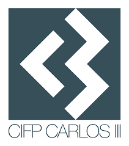

Desarrollo Web en Entorno Cliente
Tarea 3:
Jerarquía de objetos

Actividad 4
Utiliza el método setTimeout para realizar una redirección de la página a otra que tu elijas, pasados 3 segundos desde la carga de la página.
Ya que esto se deja a mi criterio, le dejo mi grupo de rock.
Click para reforzar mi ego
Anterior